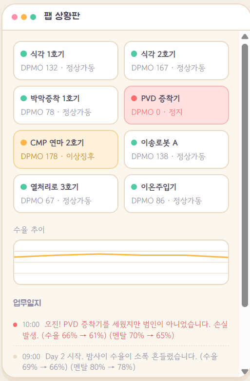
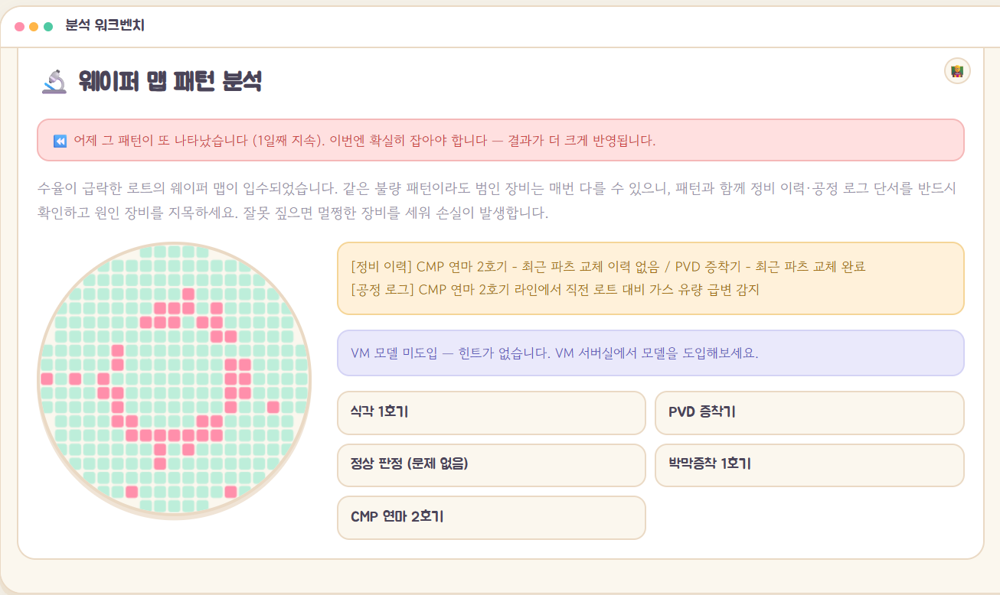
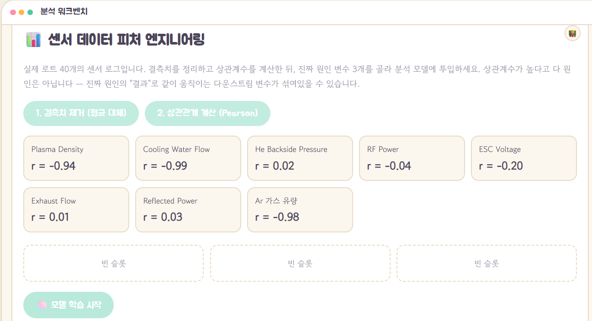
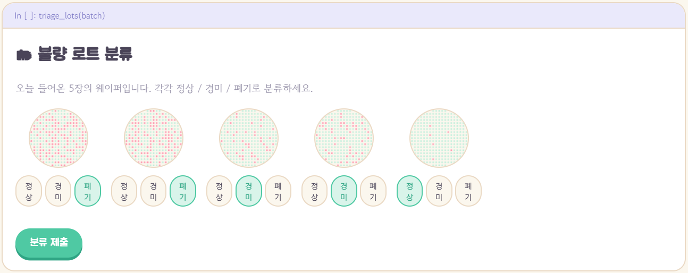
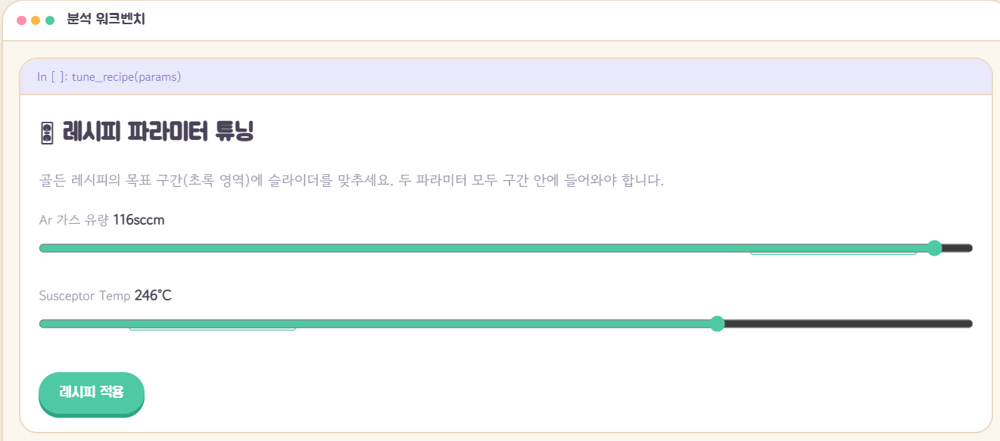
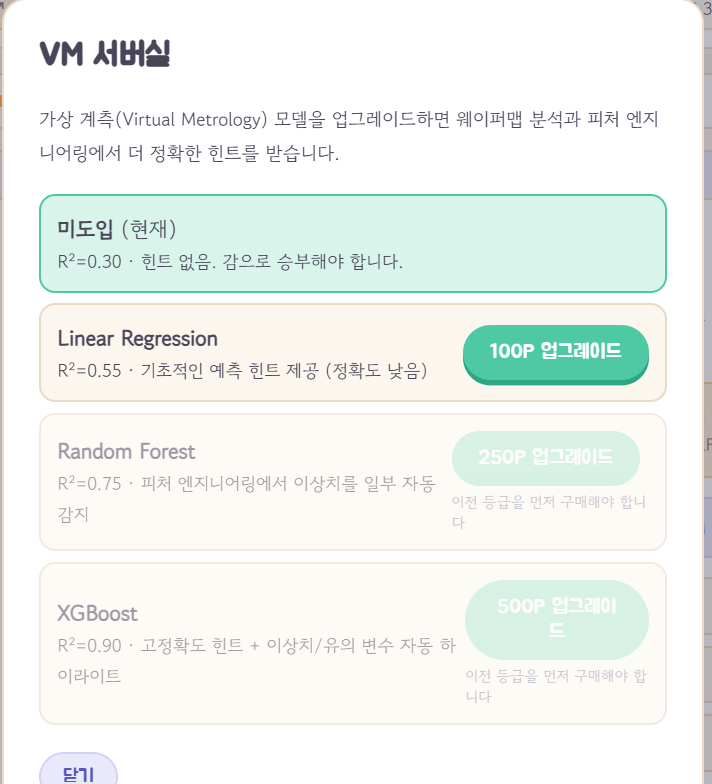
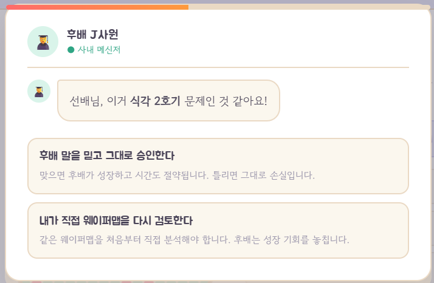
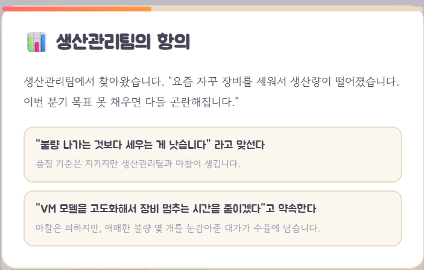
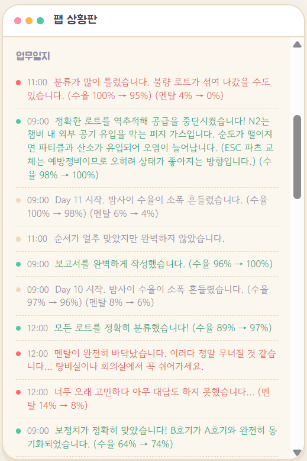
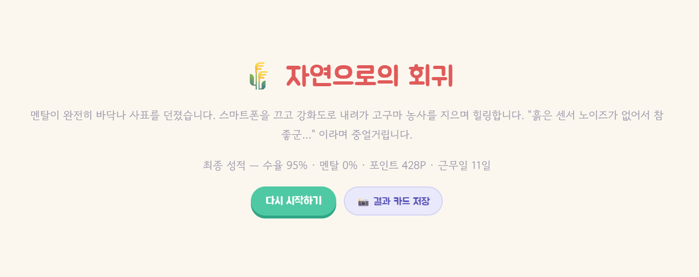

<수율 엔지니어의 하루> 게임 개발
"수율 엔지니어는 실제로 어떤 하루를 보낼까?"를 직접 플레이해서 느낄 수 있게 만들어보고 싶어서 시작한 브라우저 게임입니다. 스토리·밸런스·디자인·13종 이상 미니게임·7가지 엔딩까지 기획과 디테일을 전부 직접 짰고, 코드 구현은 Claude와 함께 페어 프로그래밍하듯 진행했습니다. 하나씩 뜯어보며 완성해가는 과정 자체가 정말 재밌었어요.
개요
수율 엔지니어라는 직무가 실제로는 어떤 하루를 보내는지 와닿지 않고, 취업 준비생일 때 상상만으로 만들어보는 하루는 재밌을 것 같아 만들어보게 되었습니다. 데이터 분석·문제 해결·사람 사이의 트레이드오프 등 수율 엔지니어의 의사결정 과정을 직접 플레이하며 즐길 수 있는 브라우저 게임을 기획했습니다. 게임 속 업무 하나하나, 등장인물 대사, 밸런스, 엔딩 조건은 직접 설계했고, 실제로 동작하는 코드로 옮기는 과정은 Claude Code를 활용했습니다.

핵심 게임플레이
화면은 듀얼 모니터 구조입니다. 왼쪽은 "팹 상황판" — 장비별 가동 현황, DPMO, 수율 추이 그래프, 실시간 업무일지가 흘러가고, 오른쪽은 "분석 워크벤치" — 실제 업무를 처리하는 화면입니다. 하루에 업무 슬롯 2개, 처리하고 정산하면 다음 날로 넘어가는 턴제 구조로 14일 안에 수율 95% 이상을 만들어야 합니다.

13종 이상의 업무 중 제가 가장 공들인 몇 가지만 소개하면:




여기에 4축 스탯 시스템(수율 · 멘탈 · 포인트 · 설비 친밀도)이 서로 얽혀 돌아갑니다. 멘탈을 깎아서 선배에게 조언을 구할 수도 있고, 포인트를 모아 VM(가상 계측) 모델을 업그레이드해서 분석 힌트의 정확도를 높일 수도 있어요.

돌발 이벤트
실제 현업처럼 상사·후배·동료가 메신저나 팝업으로 불쑥 끼어드는 서사형 이벤트를 잔뜩 넣었습니다. 대부분 모두를 만족시킬 수 없는 기회비용 딜레마라서, 고르고 나면 한 번씩 찜찜해집니다.


이 외에도 탕비실에서 멘탈을 채우다 자리를 비웠다고 혼나거나, 밤새 골든 웨이퍼(수율 98%)를 지키려고 야근을 택하거나, 협력사 원자재 스캔들의 진짜 원인을 교체 이력에서 추론해내는 이벤트 등, 매 판마다 조금씩 다른 조합으로 등장합니다.
기술 구현
프레임워크·번들러·빌드 도구 없이 index.html, style.css,
game.js 정적 파일 3개만으로 구동되도록 만들었습니다. GitHub
Pages·Netlify·itch.io 등 어떤 정적 호스팅에도 그대로 배포할 수 있습니다.
- Canvas API: 웨이퍼맵, 수율 추이 차트, 엔딩 결과 카드를 이미지 파일 없이 코드로 그리도록 구현
- Web Audio API: 외부 음원 파일 없이 오실레이터로 타이핑음·전화벨 등 사운드를 합성
- localStorage: 서버 없이 브라우저 저장만으로 "이어하기" 구현
스탯이 바뀔 때마다 값이 자동으로 업무일지에 기록되도록 상태 관리 구조를 통일했고, 여러 이벤트가 동시에 발생해도 하나씩 순서대로 모달이 뜨도록 큐 구조로 처리했습니다. 플레이해보면서 "여기서 로그가 꼬인다", "이벤트가 겹치면 이상해진다" 하고 겪는 문제를 Claude에게 설명하고 같이 구조를 잡아나갔습니다.
상관관계 분석 업무는 가짜 수치 대신 40행 합성 데이터셋에 결측치를 일부러 섞어서 "정제 → 계산" 과정을 그대로 재현했습니다. 상관계수가 높아도 진짜 원인이 아닐 수 있다는 함정을 주고 싶어서, 근본 원인 변수와 거기서 파생되는 다운스트림 변수를 실제 인과관계로 설계했습니다.
웨이퍼맵 유형이 과도하게 반복 출제되던 문제는 1만 회 몬테카를로 시뮬레이션으로 검증해, 콜백 메커니즘의 확률적 중첩이 원인임을 정량적으로 찾아내 확률을 재조정했습니다. 고정된 "패턴 → 설비" 매핑도 없애고, 설비 "그룹 + 정비 이력/공정 로그 단서" 생성 로직으로 바꿔 매회 다른 근거로 추론해야만 풀리도록 재설계했습니다.

엔딩
최종 수율·멘탈·설비 친밀도 조합에 따라 7가지 엔딩(기술 명장 / 고독한 천재 / 데이터 마사지사 / 번아웃 등)으로 갈립니다.

배운 점
- 콘텐츠 양을 늘리는 것보다, "그럴싸해 보이지만 사실 패턴 암기"인 문제를 "매번 다른 근거로 추론"하게 바꾸는 설계가 훨씬 어렵고 중요하다는 것을 느꼈습니다
- 프레임워크 없이도 "상태-렌더 분리 + 단일 진입점 상태변경 + 이벤트 큐"라는 원칙만 지키면 순수 DOM 조작으로도 복잡한 시뮬레이션 게임의 상태 일관성을 유지할 수 있다는 것을 확인했습니다
- 이미지·오디오 파일 없이 Canvas·Web Audio API만으로도 충분히 몰입감 있는 연출이 가능하다는 것을 배웠습니다